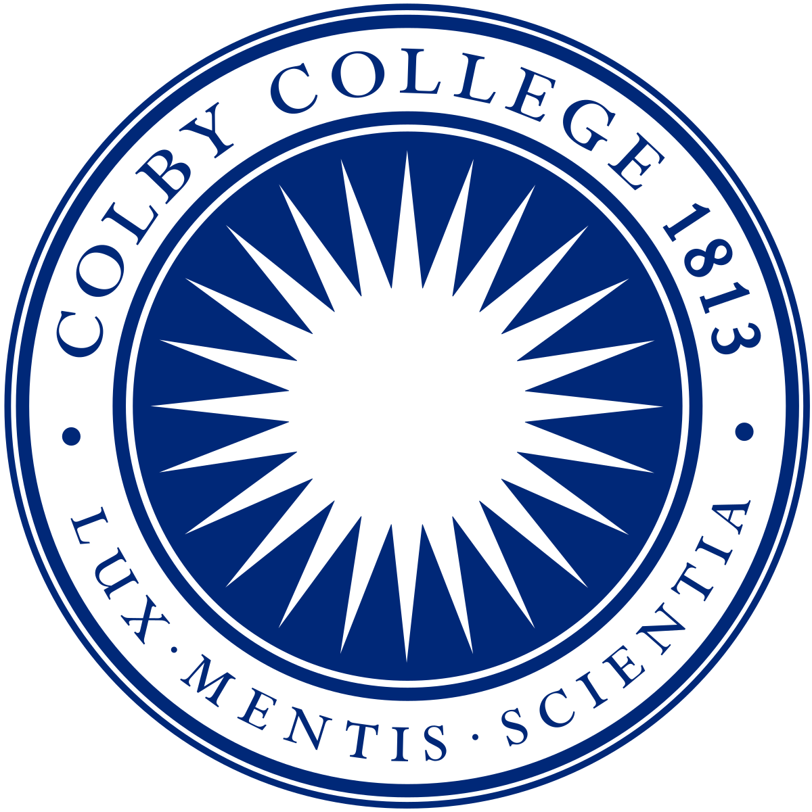

|
Changling Li Research Keywords: AI safety; multi-agent systems; AI governance; (multi-agent)reinforcement learning; cooperative AI; game theory. Motivation: My research interests lie in multi-agent systems, AI safety, and AI governance. My goal is to prevent pathologies from human societies to reappear in AI systems and ensure safety and security for agent interactions. This passion for safe interactions is deeply rooted in my personal experiences and identity, especially during my time at United World College where I witnessed the power of communication and mutual respect in building understanding and unity despite massive culture differences. I believe that achieving safe interactions among agents, and between agents and humans requires the same foundational principles with both technical innovation and philosophical advancement. Bio: I'm a computer science master student at ETH Zurich majoring in machine intelligence and minoring in theoretical computer science. I am currently working with Prof. Zhijing Jin, and Zhang-Wei Hong in collaboration with Prof. Pulkit Agrawal at MIT and Prof. Joni Pajarinen at Aalto University. Previously, I obtained my B.A. degrees in computer science and physics with a concentration in astrophysics at Colby College. I was fortunate to work with Prof.Ying Li for my honor thesis which led me to the field of decision-making in multi-agent systems. Outside research, I enjoy watching films, particularly horrors. I also love playing squash and rowing. Before I got into machine learning, I was an art student. You can find my artwork from portfolio 1, portfolio 2, comparative studies, and architecture essay. |

|
Publications |
|
Agent-to-Agent Theory of Mind: Testing Interlocutor Awareness among Large Language Models
Ethan Choi*, Changling Li*, Yongjin Yang, Zhijing Jin Empirical Methods in Natural Language Processing (EMNLP main conference), 2025 Code / Poster / Presentation / arXiv We introduce “interlocutor awareness”—an agent-to-agent theory of mind measuring LLM’s ability to recognize and adapt to who they are talking to. We define this term, build the first systematic evaluation, and show why understanding it is crucial for AI alignment, AI safety, and multi-LLM cooperation. |
|
|
Scaling Up Energy-Aware Multiagent Reinforcement Learning for Mission-Oriented Drone Networks With Individual Reward
(Bachelor Honors Thesis)
Changling Li, Ying Li Internet of Things Journal (IoT-J), 2024 Code / arXiv We formulate mission-oriented drone network as a mixed game and create a coopetition multi-agent reinforcement learning framework to optimize the energy consumption. By comparing it to the shared-reward setting, we explore the credit assignment problem. |
|
|
ROER: Regularized Optimal Experience Replay
Changling Li, Zhang-Wei Hong, Pulkit Agrawal, Divyansh Garg, Joni Pajarinen Reinforcement Learning Conference (RLC), 2024 Code / Poster / Presentation / arXiv By formulating experience prioritization as an occupancy optimization problem, we show that the form of TD-error based prioritization is associated with the loss function and we propose a series of new prioritization formulations. |
|

|
Energy-Aware Multi-Agent Reinforcement Learning for Collaborative Execution in Mission-Oriented Drone Networks
Ying Li, Changling Li, Jiyao Chen, Christine Roinou International Conference on Computer Communications and Networks (ICCCN), 2022 Code / arXiv We create a multi-agent reinforcement learning framework for mission-oriented drone networks to enable energy-efficient task planning and execution. |
Honors & Scholarships |
|
Honors: Phi Beta Kappa, Sigma Pi Sigma, UWC Davis Scholar, Magna Cum Laude (top 5%), Dean’s List, Distinction in both majors Scholarships: UWC National Committee Scholarship, UWC Davis Scholarship, Colby College Institutional Grant |
Teaching |
|  |
Teaching Assistant, Department of Computer Science, Colby CollegeCS 353 Interactive System CS 251 Data Analysis and Visualization CS 231 Data Structure and Algorithm CS 152 Computational Thinking: Science CS 151 Computational Thinking: Visual Media Teaching Assistant, Department of Physics and Astronomy, Colby CollegePH 241 Modern Physics I PH 242 Modern Physics II |
|
template from jonbarron |